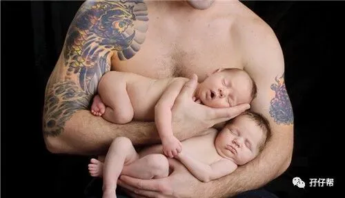
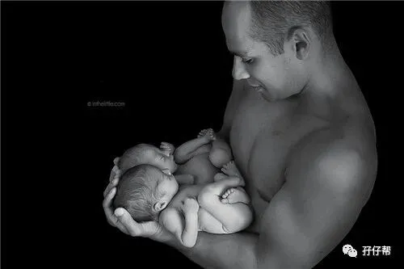
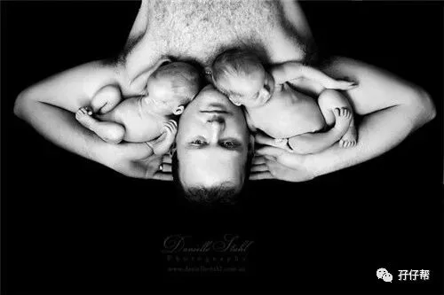

文|圆圈妈，一个文思如尿崩的双胎妈妈
图|来自网络，如有侵权，请联系删除
爸爸，
是一种生物，
这种生物，
很特别，
多数时候，很无聊，
有些时候，很无用，
关键时刻，有点作用，
必要时刻，值得托付。
------圆圈妈
· 正 · 文 · 来 · 啦 ·
【01】
谁说爸爸们都是“搅屎棍”
在一次育婴师培训课上，有个人引起了我的注意…
其实，这个人想不引人注意都难，因为30个学员中，只有他一人是男性！
他在课堂上的表现很棒，认真做笔记答题发言，老师教一遍，他一学就会，照顾新生儿那些繁琐的细节，他居然都能学着老师的步骤做到90%以上，若不是自主自愿学习，一定达不到这种境界。
坐在他的边上，我忍不住八卦了下：
“你是不是走错课室了？”
“没有！”
“那你为啥考育婴师证？”
“我老婆怀了双胞胎…”
“...”
我突然发现，这位说话有点奶声奶气的准爸爸，虽然身高才170左右，但怎么觉得他比姚明还要高大威猛….
谁说天底下的爸爸们都是“诈尸”般存在。
这不，有一个例外嘛！无独有偶，我身边也有287位不是巨婴般存在的爸爸们。
现在很多育儿类文章都刻意描黑“爸爸”这个词，说宝爸是“巨婴”，是“最没用的母婴产品”，是“一粒老鼠屎”，是“甩手掌柜”，是“猪队友”…
若不是我生了一对双胞胎，组建了一个双胞胎爸爸群，认识了一群另外一种风格的爸爸，我差点…就被骗了！
【02】
这是一个特殊的群体，
代号“双胞胎爸爸”
去年，双胞胎育儿网站和公众号刚成立不久，那时只有双胞胎孕期群，一位宝爸加我微信说，媳妇单绒双羊疑似TTTs，接近崩溃边缘，他想入群咨询，希望听听过来人的意见，找到解决办法。
无奈，群规在先，孕期群仅限双胎妈妈加入！隔着手机屏幕，我能感觉到他的失望，焦虑和无助。
双胞胎爸爸也是一个特殊的群体。自从发现媳妇怀上双胞胎后，铁铮铮的汉子居然也有多愁善感的一面。
准爸爸们对双胎妊娠一知半解，甚至莫名的恐慌，特别是在一些负面信息的提示下，天天提着嗓子眼过日子，而且还不能轻易流露出来！
妈妈们有地儿交流孕育经验，大吐苦水，爸爸们也有权利拥有，而且迫！不！及！待！
于是，我建了这个双胞胎爸爸专属的交流群，当时所有母婴自媒体同行都觉得圆圈妈疯了…
我只想说，吐槽发泄不是妈妈们的专利，爸爸们也有低潮期，需要理解，需要倾诉，需要找到同频道爸爸们的共鸣…
我承认，不靠谱的爸爸有很多，但优秀给力的爸爸也不少。
我坚信，不是所有爸爸都是搅屎棍，想要入群学习的宝爸们都有一个简单纯真的想法：当一个“战斗鸡”式的爸爸！
而爸爸群的确没有让我失望，不断有双胎爸爸找到组织，加入到孖仔帮爸爸群...
诉说初为双胞胎爸爸那种焦虑和忐忑...
探讨双胎妊娠那些产检注意事项...
分享即将升级孖宝父亲的紧张激动...
吐槽养育双胞胎那些酸甜苦辣...
挖掘养娃育儿那些创新理念…
从那些只字片言中，我深刻感觉到，这只是一群很傻，很囧，很天真的大男孩。
我发自内心地喜欢爸爸群的氛围，在这里，我看到的不是巨婴男，不是猪队友，不是搅屎棍，而是一群为了这个特殊双胞胎家庭的幸福生活不断学习，努力成长的大男孩。
【03】
这是一群大男孩，
有一个共同名字：双胎奶爸
在双胞胎爸爸群，每一个爸爸都形象分明，各有特色…
有些宝爸很焦虑，对孕期美食掂斤播两...
有些宝爸很佛系，对产检结果淡而处之...
有些宝爸很贴心，堪称半个月嫂，伺候宝妈坐月子...
有些宝爸很细心，俩娃感冒发烧，每种儿童用药的成分均锱铢必较...
即便他们大不相同，但宗旨都一样，为了媳妇，为了两孩子，愿意呆在爸爸群，与同频道的爸爸一起交流养娃育儿心得！
▲奶爸给双胞胎换衣服▲
让人特别印象深刻的是…
晒娃狂魔的他，硬汉一枚，经常晒宝宝睡觉，晒太阳的视频，不经意露脸的他，一脸沧桑疲惫，但看着两儿子的眼神却那么温柔有爱。
宠妻狂魔的他，是个厨师，保险顾问，是传说中的“别人家的老公”，他做的美食和月子餐，让人垂涎欲滴，他对妻子的细心体贴，让人羡慕不已。
科研达人的他，整个孕期疯狂研究各种双胎科普文献，“知彼知己，百战不殆”，可喜的是37周后，他收获了一对5斤多的龙凤胎宝宝。
囤货达人的他，是汉子又像个妹子，精心准备着两宝的日常用品，大到婴儿车婴儿床，小到一个指甲钳，他都亲力亲为，尽心尽力。
【04】
给爸爸们10086+个赞
特别想跟妈妈们说，如果你对自家宝爸有意见，从而对全天下所有爸爸们心如死灰，那么请告诉我，我邀请你去爸爸群！那里一定会治愈你受伤的心灵，从而改善你对爸爸们的偏见！
同时，也请妈妈们暂且放下抱怨，仔细回忆下…
在你大腹便便时，谁给你摸黑开灯，扶你起来上厕所…
当你半夜饿醒，谁给你煮面条，蒸包子，去吃海底捞…
当你躺在手术台生娃，谁在产房外替你担心，为你祈祷…
当你喂母乳累趴时，谁帮你把孩子接过来拍嗝哄睡…
当你为俩娃生病哭泣时，谁给你一个厚实的肩膀依靠着…
是的，那个人就是宝爸！
是你自己家的老公！
▲产房外，别人家的老公▲
也许你会说，这是为人父，为人夫该做的。
的确，必须的！
但，也得看他愿不愿意啊！
他愿意，是因为他真的爱你！
因为爱你，所以爱屋及乌，娘仨，都爱！
因为爱你，所以他想要努力做个你眼中的好爸爸！
妈妈的出厂设置是天性爱孩子，再加上十月怀胎的准备期，大多数妈妈们都能凭借母性的本能，对育儿工作信手拈来。
而爸爸的出厂设置却依然保持着原始社会那种“妈妈带娃，爸爸打猎”的行为模式，让男人们一夜间秒变“超人奶爸”，恐怕...有违常理！
但妈妈们也不必太沮丧，得益于很多育儿文章对爸爸们或褒或贬的高度关注，一大波爸爸们正朝着“热爱带娃”的方向不断进化了。
与其埋怨爸爸们在育儿工作中拖后腿，掉链子，倒不如给他们多点空间，多点耐心， 多点赞美！
▲奶爸一人哄睡双胞胎▲
事实上，时代变迁赋予了每个爸爸都有一种无师自通的育儿潜能，只不过在妈妈们的母爱掩盖下，暂无用武之地。
那么，妈妈们不妨来点小心机，找个风雨交加的夜晚，把俩娃丢给宝爸，自己潇洒去，让他体会下独自带俩娃的酸爽，同时逼他现出超人奶爸的潜能！
须知道，一个爸爸要是开始在养娃育儿路上开窍了，基本上就没妈妈的事了！
最后，
孖仔帮，祝所有双胞胎爸爸们，
父亲节快乐！
即便不快乐，
有俩娃在，
活着，也挺好哈！
-END-
今日互动话题
#双胞胎爸爸的父亲节，收到什么礼物啦#
评论区聊一聊呗！
一好文推荐一
一加入社群一
一关注孖仔帮一
觉得双胞胎爸爸不是“搅屎棍”的？请点“在看”



